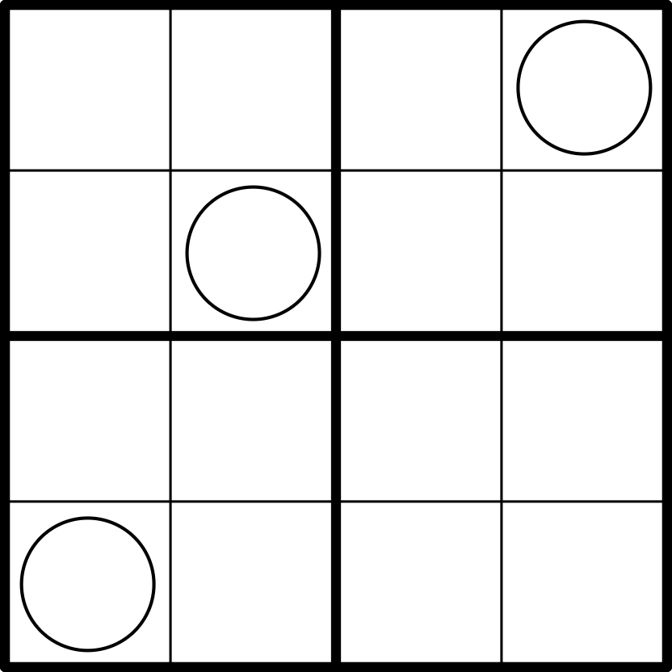

Vriendelijkheid - ⭐️⭐️

LINK
REGELS:
- Standaard sudoku: Plaats de cijfers van 1 t/m 4 eenmaal in elke rij, kolom, en 2x2 blok.
- Custom: Een 'vriendelijk' vakje bevat een cijfer dat gelijk is aan het rij-, kolom-, of bloknummer van dat vakje (rij 1 t/m 4 van boven naar beneden, kolom 1 t/m 4 van links naar rechts, en blok 1 t/m 4 van linksboven naar rechtsonder in leesvolgorde). Er zijn precies 6 'vriendelijke' vakjes in de puzzel.
- Custom: Een cijfer in een cirkel is gelijk aan het aantal cirkels die dat cijfer bevatten.